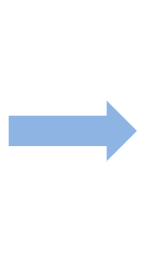

Marauder's Map
Technology behind


Ultrasound Beacon per room --------------> Smartphone receiver --------> Cloud as aggregator and processor -----------> Visualizer
Data Schema:
{
"location" : {
"DisplayName" : "Ben Zhang",
"UniqueName" : "ee149.benzhang",
"Readings" : [[1352756398000, 545.11]],
"uuid" : "d8401a6e-2313-11e2-99e6-b8f6b119696f"
}
}